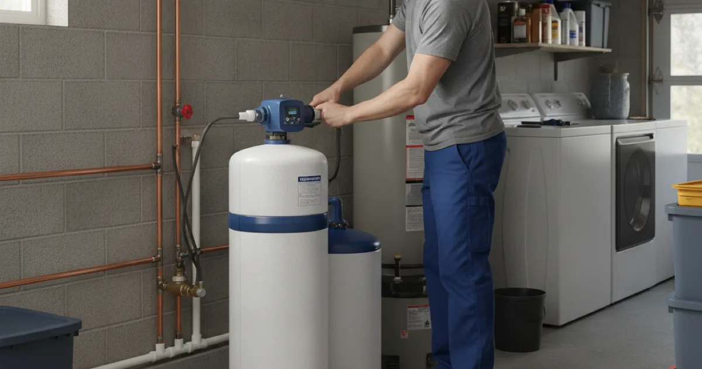

Water Softener Installation in Westchester County, NY
Hard water leaves scale on fixtures and shortens the life of your appliances. Dan's Drains installs whole-home water softeners that protect your plumbing and make everyday water easier to live with.
- Licensed & Insured
- Same-Day Service Available
- Upfront Pricing
- 15+ Years Local Experience

Need a plumber in Westchester County? We can usually help the same day.
Signs You Have Hard Water
Hard water is common in this area, especially on wells. Tell-tale signs include:
- White, crusty scale on faucets and showerheads.
- Spots on glasses and dishes after washing.
- Soap and detergent that do not lather well.
- Dry skin and dull laundry.
Beyond the nuisance, that same scale builds up inside your pipes and water heater.
How a Water Softener Works
A softener removes the minerals that make water hard before the water reaches your fixtures and appliances. The result is water that rinses cleaner, protects your plumbing, and helps appliances last longer.
Because scale is especially hard on water heaters, a softener pairs well with a new water heater install we handle, extending the life of both.
Talk to a local Westchester County plumber today.
How We Install a Softener
We find the right spot on your main water line, install the softener, and connect it so it treats the water feeding your whole home. Then we set it up and confirm it is working before we leave.
We size the unit to your household's water use so it keeps up without wasting salt or water.
Hard Water in Westchester Homes
Homes on wells around Armonk and the rural parts of the county often deal with harder water than those on municipal supply. Left untreated, it quietly shortens the life of water heaters, dishwashers, and washing machines.
The CDC's private well water guidance is worth a read if you are on a well, and we handle the softening side that protects your plumbing.
When to Call a Pro
Call us when scale is building up on fixtures, appliances are wearing out early, or you simply want easier water. We will confirm a softener is the right fix and size it correctly.
If you also want better-tasting drinking water, ask about adding a home water filtration system alongside it.
Frequently Asked Questions
How do I know if I need a water softener?
Scale on fixtures, spotty dishes, poor lather, and appliances that wear out early all point to hard water. We can confirm and recommend the right size unit.
Does a softener help my appliances last longer?
Yes. By removing the minerals that cause scale, a softener protects water heaters, dishwashers, and washing machines from the buildup that shortens their life.
Is softened water safe to drink?
Softened water is fine for most households. If you want to reduce sodium or improve taste, a separate drinking-water filter is a good companion to a softener.
Where does the softener get installed?
On your main water line, usually near where it enters the home, so it treats all the water going to your fixtures and appliances.
How much maintenance does a softener need?
Mostly just keeping it supplied with salt and an occasional check. We show you how when we install it.
Ready to book? Reach Dan’s Drains for fast, upfront plumbing help.